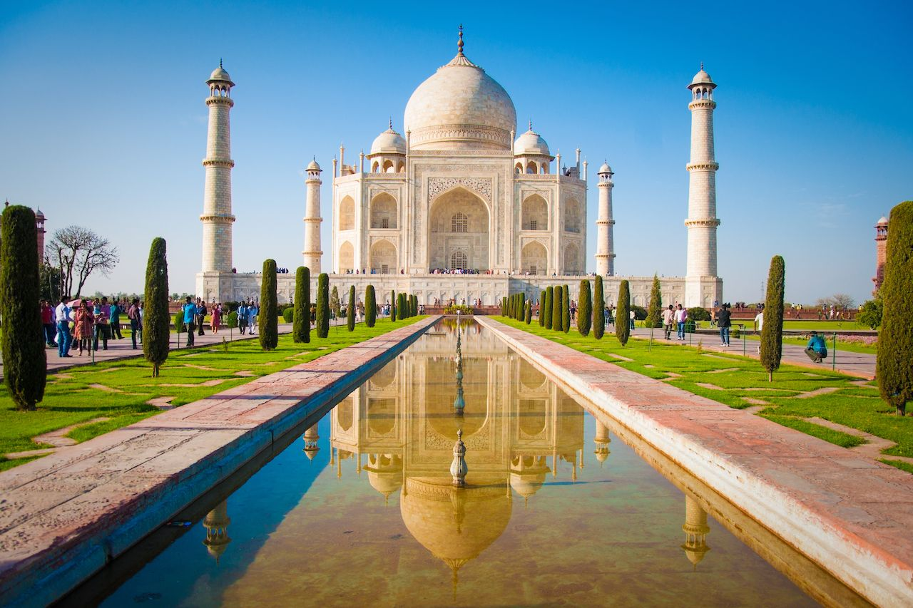
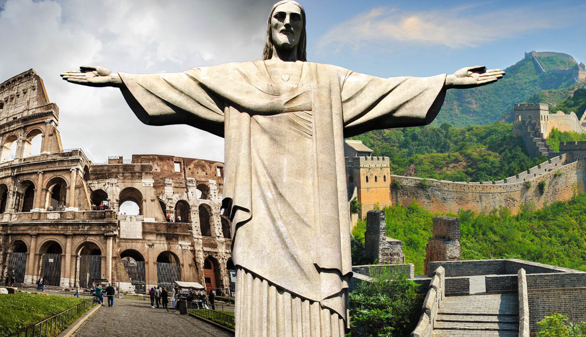
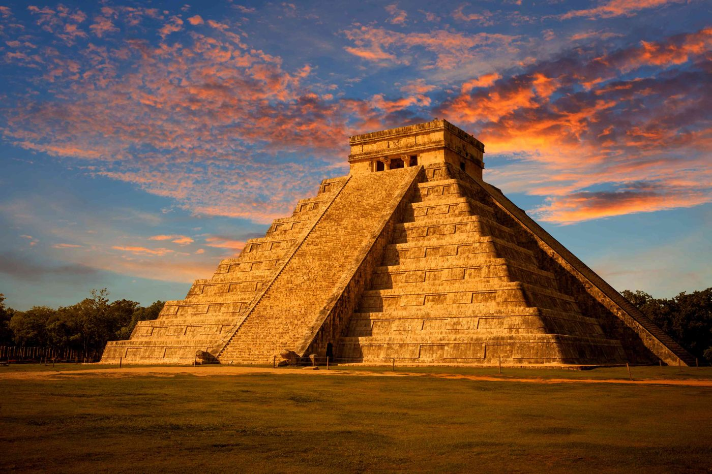
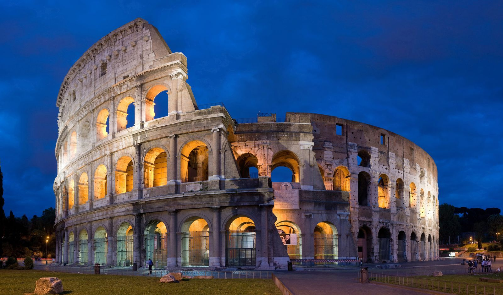
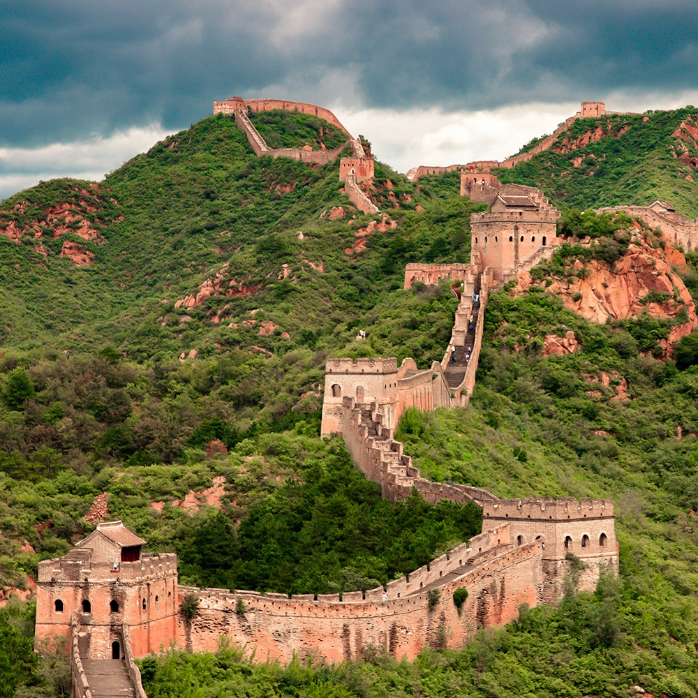

Taj Mahal

The Taj Mahal is an ivory-white marble mausoleum on the south bank of the river Yamuna in the Indian city of Agra.It was commissioned in 1632 by the Mughal emperor Shah Jahan.
Christ the Redeemer

Christ the Redeemer is an Art Deco statue of Jesus Christ in Rio de Janeiro, Brazil, created by French sculptor Paul Landowski and built by the Brazilian engineer.
Machu Picchu

Machu Picchu is a 15th-century Inca citadel located in the Eastern Cordillera of southern Peru on a mountain ridge 2,430 metres (7,970 ft) above sea level.
Chichen Itza

Chichen Itza was a large pre-Columbian city built by the Maya people of the Terminal Classic period. The archaeological site is located in Tinúm Municipality, Yucatán State, Mexico.
Roman Colosseum

The Colosseum or Coliseum, also known as the Flavian Amphitheatre, is an oval amphitheatre in the centre of the city of Rome, Italy.
Petra

Petra is a historical and archaeological city in southern Jordan. The city is famous for its rock-cut architecture and water conduit system.
Great Wall of China

The Great Wall of China is a series of fortifications that were built across the historical northern borders of ancient Chinese states and Imperial China as protection against various nomadic groups from the Eurasian Steppe.